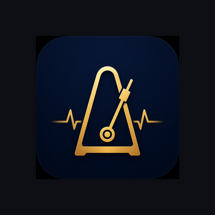

PulsarMetrônomo para bateristas e percussionistas, com os 40 rudimentos oficiais (PAS) animados mão a mão, sequências de estudo e treino de velocidade.
Toque no anel para deixar cada tempo forte, normal, fraco ou mudo. Compassos compostos (6/8, 12/8) já vêm agrupados.
Sticking, acentos, flams e drags no ritmo correto, com as mãos esquerda e direita separadas no fone.
Sons percussivos reforçados e volume até 150% com limitador: claro no fone de ouvido, mesmo tocando bateria.
Suba o BPM por etapas ou automaticamente a cada N compassos, com gap click para treinar o relógio interno.